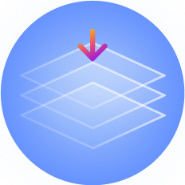

BLP-finder: что это такое и где используется, алгоритм и технологии
-
Что это
Инструмент для прокладки путей к вашим бизнес-целям. Суть инструмента понять реальный «рельеф местности» на пути к целям организации и определить оптимальные способы их достижения с учетом имеющихся ресурсов.
-
Целевая группа
Данный подход можно с успехом применять для самых различных отраслей.
-
Бизнес-эксперты
Инструмент подойдет для собственников и высших должностных лиц.
Боли управления компанией
Запутанные процессы
Когда возникают проблемы, сложно определить их источник
Понимание проблем не дает видения решения
Даже выявленниее ключевой проблемы не помогает в ее решении
Слабое вовлечение сотрудников
Даже выявленниее ключевой проблемы не помогает в ее решении
Неэффективная работа сотрудников
Сотрудники не понимают свои роли и задачи.
Нет понимания с чего начать
Нет отправной точки для начала улучшений
Отсутствие четкого видения изменений
Нет понимания, как исправить ситуацию
Неэффективная работа сотрудников
Сотрудники не понимают свои роли и задачи.
Нет понимания с чего начать
Нет отправной точки для начала улучшений
Отсутствие четкого видения изменений
Нет понимания, как исправить ситуацию
Польза продукта
-
Компания столкнулась с препятствиями, вас осаждают проблемы, например падение продаж, рост издержек или замедление развития
-
Платформа выстроит оптимальные пути к целям сразу из Поля проблем / Поля драйверов, создавая вехи-задачи на основании работы всей бизнес-команды
-
В процесс вовлечена вся бизнес-команда, что дает возможность найти упущенные или новые направления и решить болевые точки в бизнесе для проработки путей достижения целей
-
В процесс вовлечена вся бизнес-команда, что дает возможность найти упущенные или новые направления и решить болевые точки в бизнесе для проработки путей достижения целей
Для каких задач полезен
-
Привлечение инвестиций
в проект -
Улучшение качетва продукции -
Оптимизация закупок -
Запуск нового проекта -
Внедрение цифровых решений -
Ускорение бизнес-процессов -
Внедрение инноваций -
Рост продаж/ прибыли -
И многое другое
Технология работы и модули BLP-finder
С 1996 года мы помогаем прорабатывать глубинные причинно-следственные связи для выявления источников проблем, вовлекая в процесс всю бизнес-команду и выстроить оптимальные пути достижения целей непосредственно из поля проблем с помощью SaaS-платформы BLP-finder, с применением модульнульной структуры BLP-finder. Текст на замену/корректировку.
Алгоритм
Наиболее востребованный сценарий (более 70% случаев): построение Поля проблем и трансформация его в Лист задач (т.е. 2 модуля: PFO + TLO)
-

Форсайт-сессии для Ландшафтов
с группами участников
01 -
02 Обработка данных в BLP-finder
с ИИ-помощником
-
Обсуждение результатов
с участниками и руководством
03 -
04 Поиск идей + их проработка
с участниками
-
Форсайт-сессии для Ландшафтов
с группами участников
05

Модульная структура
-
[PFO] Поле проблемКогда вас осаждают проблемы, например падение продаж, рост издержек или замедление работы над проектом – воспользуйтесь модулем PFO (Problem Field of Organization). Проработайте Поле проблем, чтобы найти самые главные из них – Источники (или первопричины). За короткое время вы разберётесь в вашем проблемном месиве и найдёте отправные точки реальных улучшений!
-
[DFO] Поле драйверовКогда сотрудники утрачивают веру в себя и окружающих – бизнес замедляется, останавливается и даже откатывается назад. Воспользуйтесь модулем DFO (Driver Field of Organization), чтобы вместе с командой увидеть драйверы роста компании и активно включить их в работу. Команда увидит силы вашего бизнес – и это будет объективная картина, на которую гораздо надёжнее опираться на пути успеху!
-
 [TLO] Лист задачВыявленная ключевая проблема иногда вызывает вопрос – Как же её решать!? Воспользуйтесь модулем TLO (Task List of Organization), который из списка актуальных проблем выделит самые важные; поможет найти для них прорывные идеи и легко превратит их в SMART-задачи. Вы получите свою уникальную траекторию к цели из вешек-задач, которую невозможно скопировать чужим и одновременно легко реализовать самим.
[TLO] Лист задачВыявленная ключевая проблема иногда вызывает вопрос – Как же её решать!? Воспользуйтесь модулем TLO (Task List of Organization), который из списка актуальных проблем выделит самые важные; поможет найти для них прорывные идеи и легко превратит их в SMART-задачи. Вы получите свою уникальную траекторию к цели из вешек-задач, которую невозможно скопировать чужим и одновременно легко реализовать самим. -
[TFO] Шаблоны полейКогда вы захотите построить Ландшафт пути к цели на особом шаблоне – воспользуйтесь модулем TFO (Templates Field of Organization). Шаблон можно взять из библиотеки BLP-finder или разработать под себя – для продаж, производства, закупок и т.д. Сейчас в качестве шаблона доступен холст Бизнес модели Остервальдера. Его можно привязать в один клик – и к Полю проблем, и к Полю драйверов.

Уникальность решения
В первую очередь важно понимать, что BLP-finder — это семейство модулей с общими принципами, но подходы к работе у каждого модуля свои, а инструмент единый. Поэтому сравнивать BLP-finder с другими решениями напрямую не совсем корректно.
Но если говорить не об основном инструменте, а именно об основополагающих принципах, у BPL-finder есть несколько отличий от классических инструментов:
-
Мы не предлагаем решение ваших задач и проблем, вы сами приходите к результату в процессе работы с инструментом -
Не нужно «продавать» создаваемые решения участникам, т.к. они сами исходно вовлечены в их создание и проработку -
Получаемые решения не взяты из воздуха, а полностью опираются на возможности и ограничения самой компании, её сотрудников -
Нет навязанных извне «умных бизнес-рецептов»; все решения, рождаемые в ходе работы, уникальны – их бесполезно красть, копировать -
Применимость в любой компании (подразделении, проекте и т.п.), где есть коллектив от 3 человек и более (верхней границы нет) -
Результаты – списки SMART-задач, приоритеты и т.д. – можно немедленно включать в управленческий процесс без дополнительных доводок
Наши исследования в 2015-2020 годах причин сопротивления переменам в компаниях показали:
| Причины сопротивлений | 2015–2020 гг. |
|---|---|
| Руководство и работники по-разному представляют причины проблем, диктующих перемены | 53,8% |
| Сотрудники не признают проблем, которые диктуют необходимость изменений | 46,2% |
| Сотрудники не признают проблем, которые диктуют необходимость изменении | 45,4% |
| Сотрудники опасаются, что изменения резко увеличат объем их работы | 41,0% |
| Новые формы и методы работы слушания «сверху вниз» без обсуждения | 41,4% |
| Сотрудники опасаются, что их доходы снизятся | 38,5% |
| Инициатор изменений не пользуется уважением и доверием коллектива | 25,6% |
| Не приняты во внимание традиции и привычный стиль работы коллектива | 30,8% |
| Сотрудники опасаются потерять власть и рычаги влияния | 25,6% |
| Перемены воспринимаются избыточно революционными | 15,4% |
Похожие методолгии
Сами того не подозревая, в предтечи попали и видные методологи от менеджмента, и представители точных наук, прежде всего – математики, и даже психологи
-
Эли Голдартт
Теория ограничений
(Theory of Constraints)с идеей выявления и последующей фокусировки на узких местах в процессах и событиях
-
Каору Исикава
Диаграмма “рыбий скелет”
(“fish bone”)с идеей поиска логических связей и группировки схожих явлений в однотипные группы
-
Леонард Эйлер
Теория графоф
(Theory of Constraints)Тест из презентации в две строки или три строки
-
Курт Левин
Теория поля
(Theory of Constraints)с идеей “валентности” полей социальных сил - “позитивных” и “негативных”, с соответствующим влиянием на индивидуумов
Наши клиенты
Помогаем командам достигать высоких результатов, не срывать дедлайны, правильно оценивать сроки, риски и бюджет. Текст и заголовок на замену/корректировку.
Кейсы
-
Логистический оператор
Краткое описание решения, которое помогло компании справится с проблемами
Подробнее → -
Строительная компания
Краткое описание решения, которое помогло компании справится с проблемами
Подробнее → -
Автоконцерн
Краткое описание решения, которое помогло компании справится с проблемами
Подробнее →
Заявка
Время начать
Начните поиск путей улучшения для развития и усиления успеха вашей команды и компании